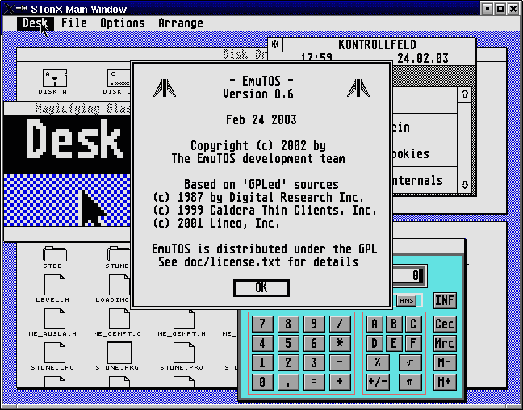
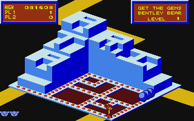
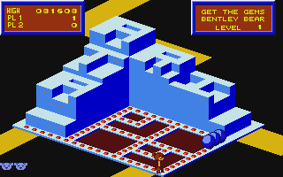
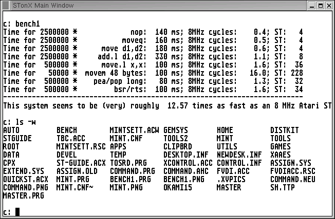
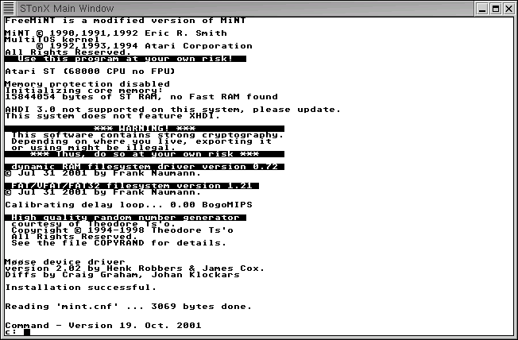
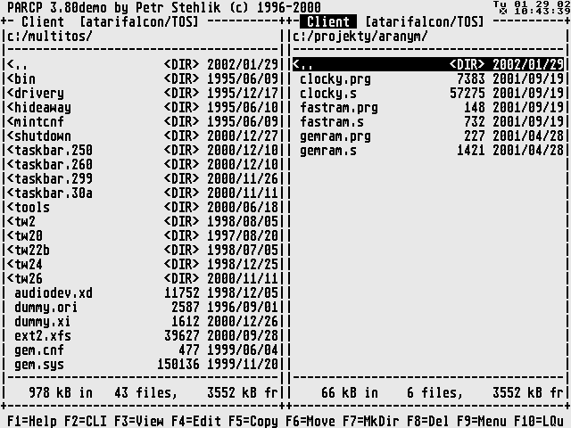

EmuTOS - Screenshots
|
About
News
Features
History
Screenshots
Download
Links
|
|---|
Here you see some screenshots of the running EmuTOS.
This one is EmuTOS in full action on Thomas' desktop. You nicely can
see, that EmuTOS is really able to run most programs today.

And for sure you can play your old games with it:
 

If you don't like GEM and all the color so much, you can easily switch
to the embeded shell EmuCON and run some character mode applications:

Well, if you find TOS too boring, you can easily boot into MiNT and run
some more modern programs:

And another one running Petr's Norton-like filemanager:
